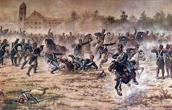
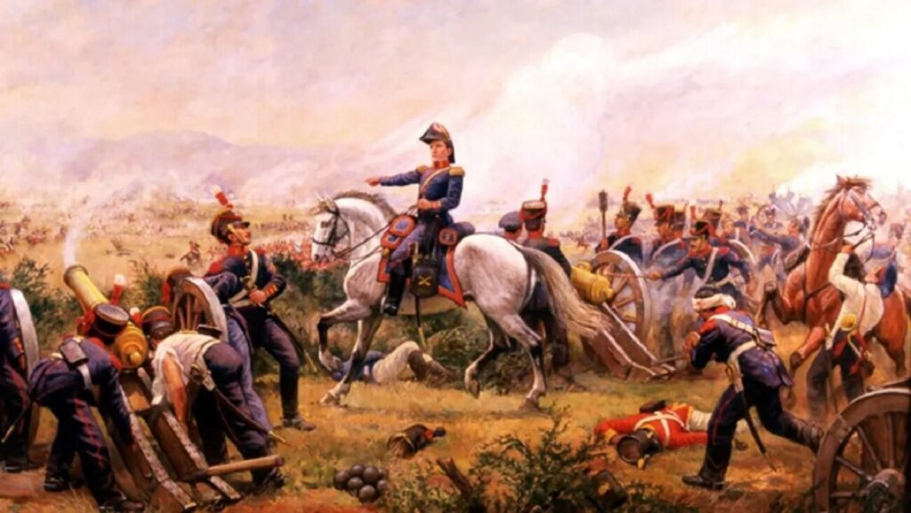
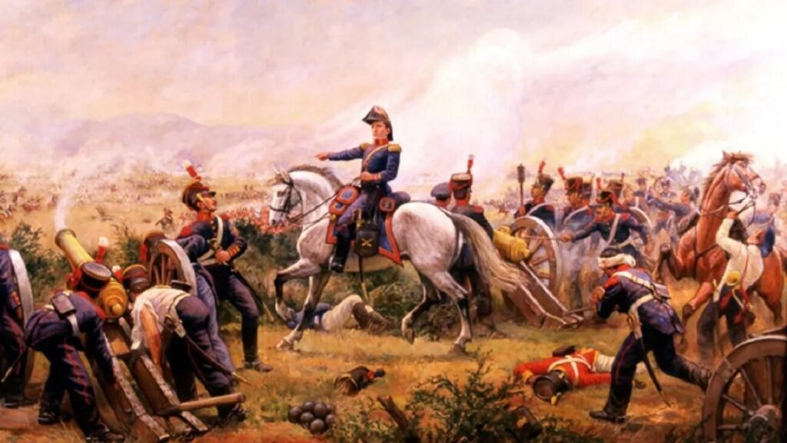
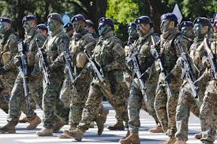

Los orígenes del Ejército Argentino se vinculan a las milicias y cuerpos locales que surgieron durante las Invasiones Inglesas de 1806 y 1807, cuando la población del Río de la Plata se organizó para defender la ciudad. Estas unidades, como los Patricios y los Húsares, se convirtieron en la base de la futura fuerza militar patriótica. La fundación formal del Ejército Argentino se establece el 29 de mayo de 1810, cuando la Primera Junta dispuso reorganizar esos cuerpos en regimientos y estructuras permanentes. Con esta decisión, se consolidó un ejército regular destinado a sostener la defensa del territorio y acompañar las campañas independentistas, marcando el inicio de su trayectoria institucional.
Entre los hechos más destacados del Ejército Argentino se encuentran su fundación en 1810 y su posterior participación en las campañas libertadoras lideradas por el General José de San Martín, que llevaron la lucha independentista más allá de las fronteras del Río de la Plata. A lo largo del siglo XIX, también cumplió un rol fundamental en la defensa de la soberanía nacional, especialmente en episodios como la Batalla de la Vuelta de Obligado, donde fuerzas nacionales resistieron la intromisión de potencias extranjeras en el territorio y en los ríos interiores. Ya en el siglo XX, el Ejército formó parte de distintos momentos de inestabilidad política, incluyendo participaciones en varios golpes de Estado, hechos que marcaron de manera significativa la historia institucional del país. En la actualidad, el Ejército Argentino orienta sus esfuerzos a la profesionalización, el adiestramiento y la modernización de sus capacidades, algo que se refleja en ejercicios conjuntos, maniobras recientes y la incorporación progresiva de nuevos medios y tecnologías destinadas a mejorar su desempeño operativo.
 

El Ejército Argentino se encuentra actualmente en un proceso de modernización y recuperación de capacidades, orientado a mejorar el entrenamiento, la preparación operativa y la disponibilidad de medios. Este esfuerzo se refleja en maniobras de gran envergadura como el “Libertador 2025”, que permiten integrar unidades de todo el país, evaluar procedimientos y reforzar la coordinación entre distintas especialidades. Sin embargo, este avance convive con los desafíos heredados de una inversión en defensa históricamente baja, que durante años limitó la renovación de material y la actualización tecnológica. Para revertir esta situación, se han realizado adquisiciones significativas, entre ellas los aviones F-16 y nuevos vehículos blindados, destinadas a fortalecer la capacidad aérea y terrestre del país. En el plano internacional, indicadores como el Global Firepower Index lo ubican como una fuerza con peso dentro del ámbito regional, gracias a su estructura, experiencia y despliegue territorial, aunque aún presenta restricciones en comparación con potencias militares de mayor escala a nivel mundial. 